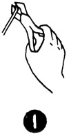

1952—How to Make Hats
by Ruby Carnahan
Making Wire Frames
PRACTICE WITH WIRE AND NIPPERS
Wire frames have many uses and can be purchased in the Millinery Supply House. However it is wise to know how to make a wire frame as sometimes it is impossible to find the style of frame wanted. You will find this knowledge valuable when making alterations that require wire changes. Much practice is needed in the use of nippers and wire before you really make a frame. (Illus. 1) Practice until you can turn one wire over another securely and silk on wire is not damaged and no point is felt where wire is cut off. Frame wires must be immovable when frame is finished. Also practice using tie wire. There are two ways to make a wire frame, by measurement or over a buckram frame for guide. When making a wire frame over a buckram frame, start at headsize, fitting wires to exactly fit frame, turning and tying wires as above. When round brim wire is on and support wires have been turned over, remove wire frame from buckram frame.
SUPPORT BRIM WIRES
(Illus. 2) Support wires on brim include center wire from back to front, support wires from side to side, and diagonal support wires left side and diagonal support wires right side.
ROUND BRIM WIRES
Round wires on brim include circumference edge wire, head-size wire and several divisional wires depending on size of frame.
MAKING FRAME FROM MEASUREMENTS
(Illus. 3) For brim cut out two headsize wires to fit head (Illus. 3a), lap ends of wire and tie with tie wire. Cut eight support wires. Start in center of headsize wire (Illus. 3b) turn front support wire over headsize wire, pinch securely with nippers.
Place second headsize wire 1" below first headsize wire and turn front support wire over this headsize wire and pinch together with nippers (Illus. 3c). Then add back support wire and side support wires in the same way (Illus. 3d). Between these support wires add diagonal support wires in the same way (Illus. 3e).
ROUND BRIM WIRES
Cut round wires, place over suppprt wires an even distance apart, and tie wire each place where divisional wire crosses round wire. Turn support wires over brim wire. Pinch with nippers until secure.
ROUND CROWN AND SQUARE CROWN
(Illus. 4) Cut four support wires correct length, tie together in center securely (Illus. 4a) with tie wire and spread support wires. Cut three round wires and place each one over the spread support wires an even distance apart and tie with tie wire at each place support wire crosses round wire (Illus. 4b). Measure wire for bottom crown correct size and turn support wires over round wire and pinch with nippers until secure (Illus. 4c). Square crown is made the same as round crown, only support wires are bent at crown edge and round wire is tied at bend.